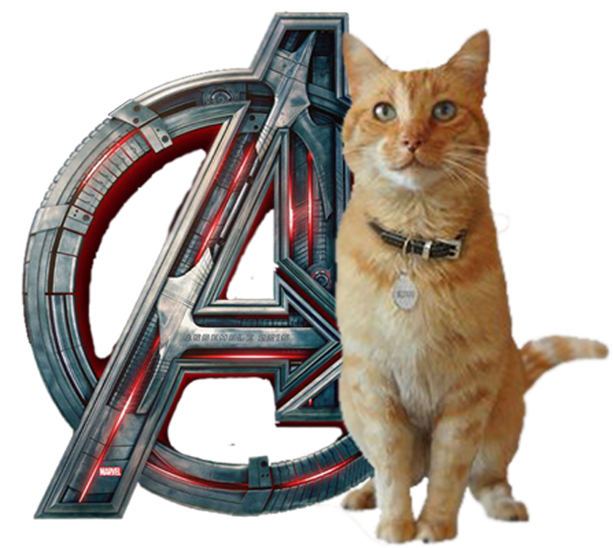

КОТИ МАРВЕЛ


Стиль бою Капітана Америка включає в себе дзюдо, бокс, східні єдиноборства. Він природжений лідер, що володіє якостями блискучого тактика і стратега. Капітан вміє пілотувати, є експертом з виживання, шпигунству, вибухів і ведення бою. Крім того, він захоплюється малюванням, історією і юриспруденцією. Здібності: Капітан Америка є кінцевою точкою в розвитку людського тіла (мається на увазі звичайне тіло, не наділена надздібностями). Капітан Америка має неперевершену спритністю, силою, швидкістю, витривалістю і прискореної реакцією вище ніж у будь-якого атлета. Сироватка Супресолдат, яку прийняв Стів, поліпшило всі його фізичні якості до найвищого рівня.
Тоні Старк, геніальний винахідник і багатющий промисловець з репутацією плейбоя, страждає від поранення, отриманого ним у полоні, де його змусили розробити для терористів зброю масового ураження. Замість цього він створює високотехнологічний костюм-броню, за допомогою якого збігає з полону. Пізніше Старк покращує свою броню озброєнням і пристроями, створеними на базі ресурсів його компанії, і використовує обладунок, щоб захищати мир в образі Залізної людини, перший час приховуючи свою особистість. Сили і Здібності: Броньований, оснащений новітньою зброєю костюм, що дає нелюдську силу. Геній-винахідник, механік, інженер. Здатність до польоту. Освоїв навички бойових мистецтв. Зброя - світлові імпульси.
Під час експериментального вибуху гамма-бомби вчений Брюс Беннер кинувся рятувати підлітка, який приїхав на випробувальний полігон. Зіштовхнувши хлопчиська, Ріка Джонса, в траншею, сам Бенннер виявився у вибуху, отримавши масивну дозу радіації. Пізніше він прийшов до тями в лазареті, здавалося, порівняно неушкодженим, але вночі перетворився в громіздку сіру форму, проломив стіну і втік. Солдат з послідувала пошукової партії назвав інакше непізнане створення «велетнем» Здібності: cуперсила, cупершвидкість, невразливість і зцілюючий фактор, адаптація, абсорбція, емпатія.
Тор - захисник Землі, його постійно тягне на цю планету, зрозуміти яку він не завжди в змозі. Тор ріс разом зі зведеним братом - Локі. Локі не є жителем Асгарда і не може вважатися богом. Однак, довгий час він був другим претендентом на престол. Між братами поступово росла ворожнеча, проте Тор відмовлявся це помічати, будучи впевненим у вірності брата. Здібності Тора: має величезну силу і знаннями, які недоступні простому смертному. Як і будь-який бог, Тор безсмертний. Крім того, будучи богом війни, він залишається незрівнянним воїном, перемогти якого в чесному бою неможливо. Він не схильний до хвороб і отрут і стійкий до різних видів заклинань.
Наталі Романова - одна з найталановитіших шпигунів Романова майстерно володіє бойовими мистецтвами, може вступати в рукопашний бій, влучно стріляти, зламувати комп'ютерні системи. Вона також майстерний психолог. Цей набір якостей роблять Наташу незамінним леном команди Месників. Романова може зламати майже будь-який комп'ютер або систему безпеки. Наталі може пілотувати повітряні кораблі, наприклад, Квінджет. Хоча більшу частину часу Романова поводиться серйозно, їй не чужі і жарти, об'єктами яких найчастіше стають Капітан Америка і Хокаю, тобто її хороші друзі.